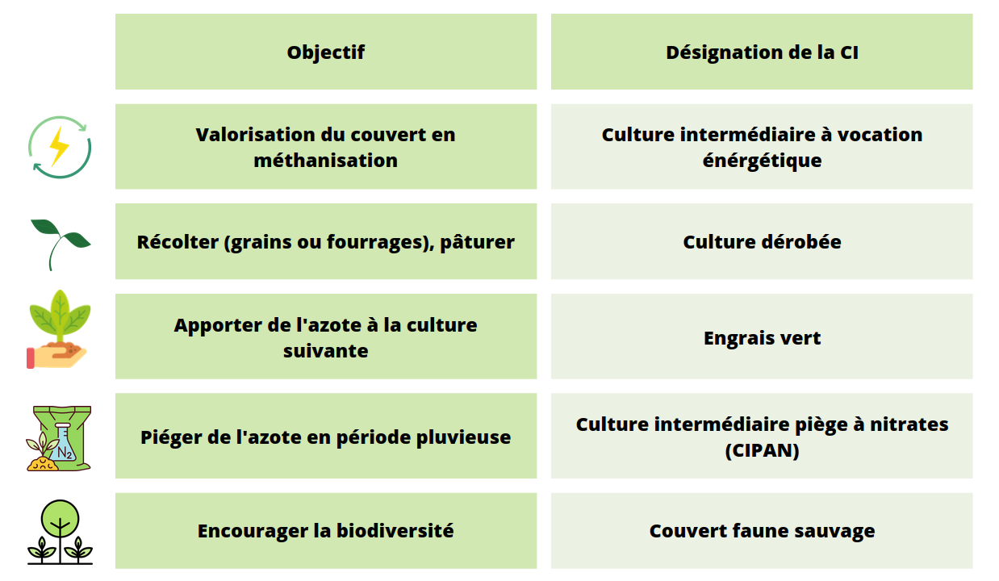

Biomasse et matière sèche :
La biomasse désigne la quantité totale de matière organique vivante dans un système, tel qu'une forêt ou un champ agricole. Elle comprend un large éventail de matières organiques, comme les feuilles, les tiges, les racines et les graines, ainsi que les microbes et les champignons associés.
La matière sèche, quant à elle, désigne la quantité de matière organique après élimination de la teneur en eau. La matière sèche est généralement exprimée en pourcentage du poids total de la matière et est souvent utilisée pour comparer les quantités relatives de matière organique dans différents systèmes ou pour comparer les quantités de matière organique dans le même système à différents moments.
Dans le contexte agricole, la biomasse et la matière sèche sont des indicateurs importants de la productivité et de la qualité des cultures. Elles sont utilisées pour évaluer l'efficacité des pratiques de gestion et pour prendre des décisions éclairées sur la sélection et la gestion des cultures. La mesure de ces indicateurs se fait à travers l’inventaire agricole, qui est le processus de collecte des données agricoles. La quantification de la biomasse peut être effectuée en utilisant des techniques de terrain telles que la mesure de la hauteur des plantes et le comptage des tiges, ou en utilisant des techniques d'observation satellite telles que la télédétection. La matière sèche peut quant à elle être mesurée en utilisant des techniques telles que la détermination de la teneur en humidité. Cette information est importante pour comprendre la teneur en nutriments des cultures et les émissions potentielles de gaz à effet de serre liées à la décomposition de la matière sèche. Ces données collectées peuvent être utilisées pour améliorer les pratiques agricoles et les politiques pour minimiser les impacts négatifs et comprendre les impacts environnementaux associés aux activités agricoles.
Biomasse des couverts intermédiaires
La biomasse des couverts intermédiaires fait référence au couvert végétal implanté pendant la période d’interculture, soit entre la récolte et le semis de deux cultures principales, par exemple entre un blé d’hiver et un maïs. La période d’interculture peut être de courte durée, précédant le semis d'une culture d'automne, ou de longue durée, avant un semis en fin d'hiver. Elle peut durer de 2 à 9 mois.
Selon les objectifs assignés par l’agriculteur, on peut distinguer différents qualificatifs pour les CI. (Voir tableau ci-dessous)

L'estimation des CI a longtemps été négligée par rapport à celle des cultures principales. Cette inégalité peut être attribuée à plusieurs facteurs, tels que la difficulté de mesurer la biomasse des couverts intermédiaires en raison de leur diversité florale et de la complexité des systèmes de couvert. De plus, les agriculteurs peuvent considérer les cultures principales comme étant plus importantes, ce qui peut expliquer la concentration de leur stratégie de gestion et d'investissement sur ces dernières. La biomasse des couverts intermédiaires peut également souffrir d'une faible reconnaissance et d'un manque d'information sur ses avantages, ce qui peut dissuader les agriculteurs, les gouvernements et les investisseurs de s'engager dans des initiatives en la matière. Enfin, le manque d'incitations financières peut être un frein à l'estimation et à la mise en valeur de la biomasse des couverts intermédiaires.
Cependant, il est important de noter que l'importance de cette dernière est en train de grandir en raison d'une prise de conscience croissante de ses avantages pour l'environnement, ainsi que la rentabilité et la durabilité des systèmes agricoles. L’un des avantages clés de la biomasse des couverts intermédiaires est qu'elle aide à améliorer la qualité du sol en protégeant contre l'érosion et en fournissant des nutriments. Les couverts intermédiaires peuvent également jouer un rôle important dans la fourniture d'un habitat pour la faune, contribuant ainsi à la diversité biologique. En outre, la biomasse de ces couverts peut être utilisée comme source de biocarburants et de nourriture pour le bétail. Par ailleurs, elle peut également aider à gérer l'eau en retenant l'humidité du sol et en régulant les débits d'eau. Cela peut être particulièrement utile dans les zones à risque d'inondation ou de sécheresse.